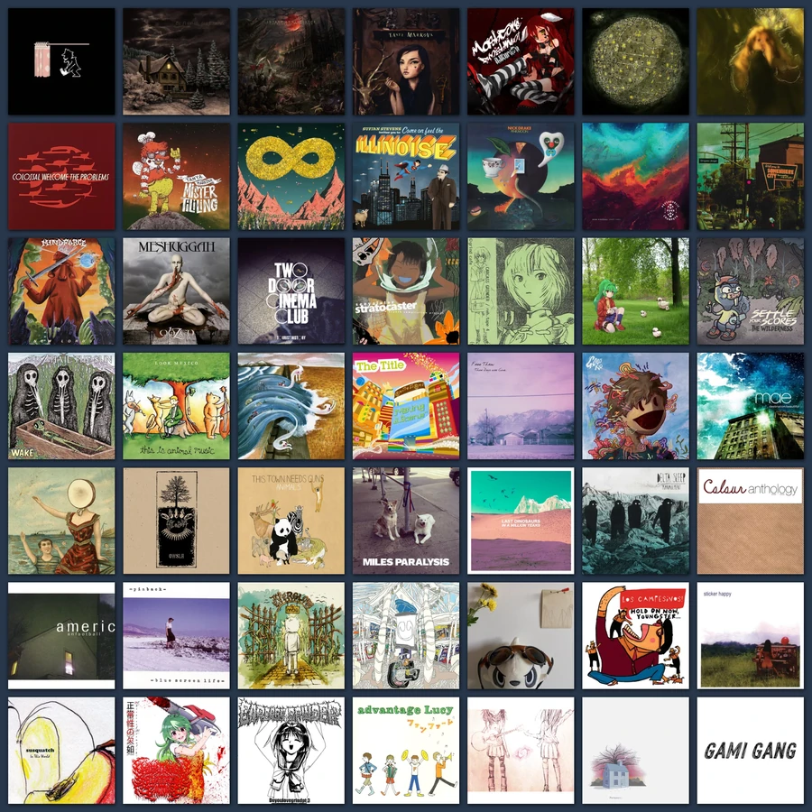
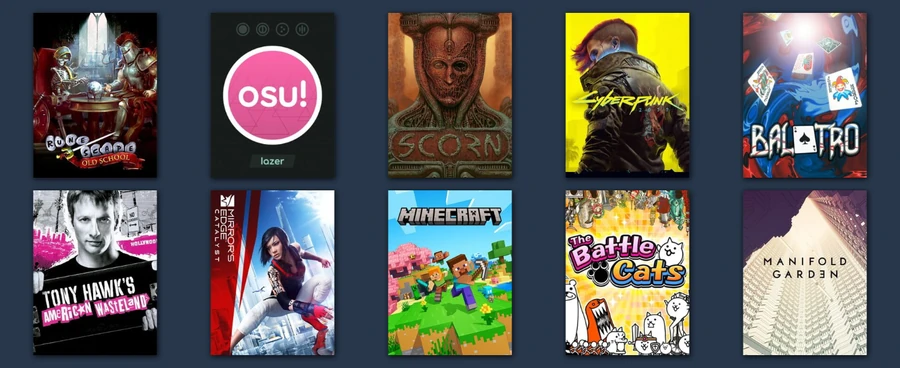
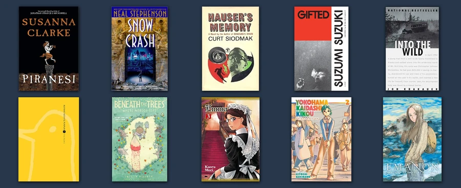

Hello! My name is Ryan Llarena. I am a 1st Year BSCS student at Bicol University from Tabaco City, Albay.
About Me
I am Ryan R. Llarena, a first year BS Computer Science student at Bicol University, I enjoy tinkering with computers, playing video games, reading, and listening to music.
My Path Into Computing
I started getting into computers when my parents bought me my first android tablet which taught me how basic technology worked, and eventually, my first personal computer, a Lenovo Thinkpad L540, I got into pirating games and emulation. optimizing my laptop to run those games faster, which eventually led me to learn more computer science related topics like linux, scripting, homelabbing, open source software, and more. That thinkpad i still use as my home server.
My Hobbies
- Computers
- Video Games
- Reading
- Listening to and Writing Music
My Goals
- Graduate with a Degree in Computer Science
- Get Good Grades
- Pass my quizzes and exams
My Favorites
One website I enjoy visiting is Wikipedia because it hosts millions of articles where you can read about any topic that you are interested in.
My Class Schedule
| Subject | Day | Time |
|---|---|---|
| CS 101: Introduction to Computing | Mon | 09:00 - 12:00 |
| CS 102: Computer Programming 1 | Mon, Tue, Wed | 13:00 - 16:00 |
| Math 101: Mathematical Analysis | Tue, Thu, Fri | 09:00 - 10:30 |
| Phys 1: Physics for Computing | Tue, Thu | 10:30 - 12:00 |
| GEC11: Understanding the Self | Tue, Thu, Fri | 13:00 - 16:00 |
| Pathfit 1 | Wed | 07:00 - 09:00 |
| NSTP: LTS | Tue, Thu, Fri | 08:00 - 11:00 |
My Charts



Reflection
Using the About Me activity, I rebuilt it with a real layout and a sidebar beside the content using CSS Grid. I took the colors from the background for the palette, found a font i liked which i changed to: Manrope, and gave the table a gradient background. Learning about more css properties was my favorite part.
Sources and Credits
- Typeface: Manrope by Mikhail Sharanda, under the SIL Open Font License 1.1.
- Background image: Manifold Garden screenshot by William Chyr, via Wikimedia Commons, under CC BY-SA 4.0.